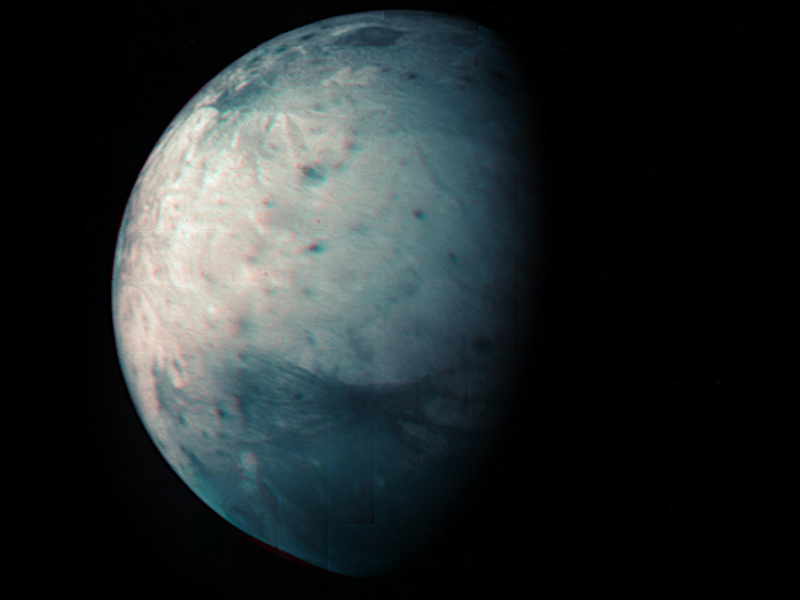

The largest planet in our solar system is Jupiter, located fifth from the Sun. Its mass is greater than all the other planets combined. The planet's distinctive stripes and swirls are actually cold clouds of ammonia and water, floating in an atmosphere made of helium and hydrogen. Jupiter's Great Red Spot is a giant storm that has been active for hundreds of years and is larger than Earth. Jupiter is also encircled by many moons, and although it has several rings, they are not as prominent as Saturn's and are composed of dust rather than ice.
Namesake:
The largest planet in our solar system is named after the leader of the gods in Roman mythology, known as Jupiter.Potential for life:
Chances are slim that life as we know it could survive in Jupiter's environment. The planet's extreme temperatures, pressures, and materials make it an inhospitable place for organisms to thrive. However, some of Jupiter's moons, such as Europa, offer more promise. Scientists have discovered a vast ocean beneath Europa's icy surface, which could potentially support life.

Size and distance:
Jupiter is a massive planet with a radius of 43,440.7 miles (69,911 kilometers), which is 11 times larger than Earth. To put it into perspective, if Earth were the size of a nickel, Jupiter would be the size of a basketball. The planet is located at an average distance of 484 million miles (778 million kilometers) from the Sun, which is 5.2 astronomical units (AU) away. An astronomical unit is the distance between the Sun and Earth. It takes approximately 43 minutes for sunlight to travel from the Sun to Jupiter at this distance.
Orbit and Rotation:
Jupiter boasts the shortest day out of all the planets in our solar system. It takes only about 10 hours for Jupiter to complete one rotation or spin around its axis. In terms of Jovian time, which is how Jupiter's orbit is measured, it takes about 12 Earth years (or 4,333 Earth days) for Jupiter to make a complete orbit around the Sun. What sets Jupiter apart from other planets is that its equator is only tilted by 3 degrees in relation to its path around the Sun. As a result, Jupiter maintains a nearly upright spin and does not experience extreme seasonal changes like other planets do.Moons:
Jupiter is essentially a miniature solar system with four large moons and numerous smaller ones. This gas giant has a total of 80 moons, out of which 57 have official names given by the International Astronomical Union (IAU), while the remaining 23 are yet to be named. The four biggest moons of Jupiter are Io, Europa, Ganymede, and Callisto, which were first sighted by Galileo Galilei in 1610 using an early telescope. These moons are also called the Galilean satellites and are among the most intriguing destinations in our solar system. Io is the most volcanically active body in the solar system, while Ganymede is the biggest moon in the solar system, even larger than the planet Mercury. Callisto has a few small craters, indicating some current surface activity. Europa may have a liquid-water ocean beneath its frozen surface, making it a compelling location for exploration as it contains the ingredients for life.Rings:
In 1979, NASA's Voyager 1 spacecraft stumbled upon Jupiter's rings, which were unexpected due to their composition of small, dark particles that are hard to observe unless illuminated by the Sun from behind. According to details collected by the Galileo spacecraft, Jupiter's ring system could have been created by dust produced when interplanetary meteoroids collide with the planet's tiny innermost moons.Formation:
Around 4.5 billion years ago, Jupiter formed as the other planets in the solar system began to take shape. It developed from swirling gas and dust that were pulled together by gravity, ultimately becoming a gas giant. Jupiter ended up with the majority of the remaining mass after the Sun formed, containing more than double the combined amount of material found in the rest of the solar system. Although it has the same components as a star, Jupiter did not grow enough to ignite. Roughly 4 billion years ago, Jupiter settled into its current location in the outer solar system, where it now sits as the fifth planet from the Sun.Structure:
Jupiter's composition is similar to that of the Sun, consisting mostly of hydrogen and helium. As you go deeper into the atmosphere, the pressure and temperature increase, causing the hydrogen gas to compress into a liquid. This creates the largest ocean in the solar system, made up of hydrogen instead of water. Scientists suspect that this ocean becomes electrically conductive like metal, halfway to the planet's center, where electrons are squeezed off the hydrogen atoms due to the immense pressure. Jupiter's rapid rotation is believed to generate electrical currents in this region, creating the planet's strong magnetic field. Whether Jupiter has a solid central core or a dense, super-hot soup of iron and silicate minerals is still unclear. It could be up to 50,000 degrees Celsius down there.Surface:
Jupiter, being a gas giant, lacks a solid surface and consists mainly of swirling gases and liquids. If a spacecraft were to attempt to land on Jupiter, it would have nowhere to land. Additionally, a spacecraft flying through Jupiter would not be able to do so without being affected by the intense pressures and temperatures deep within the planet, which can crush, melt, and vaporize it.Atmosphere:
The appearance of Jupiter is a beautiful tapestry of colorful cloud bands and spots. The gas planet is thought to have three distinct cloud layers in its "skies", which together span approximately 44 miles (71 kilometers). The top cloud layer is likely made up of ammonia ice, while the middle layer is probably composed of ammonium hydrosulfide crystals. The innermost layer may consist of water ice and vapor.The striking colors that appear in thick bands across Jupiter may be plumes of gases containing sulfur and phosphorus that rise from the planet's warmer interior. Jupiter rotates very quickly, spinning once every 10 hours, which creates strong jet streams separating its clouds into dark belts and bright zones that stretch over long distances.
Because Jupiter has no solid surface, its spots can last for many years. The planet is swept by over a dozen prevailing winds, some of which can reach up to 335 miles per hour (539 kilometers per hour) at the equator. The Great Red Spot, an oval of swirling clouds that is twice as wide as Earth, has been visible on the giant planet for more than 300 years. More recently, three smaller ovals merged to form the Little Red Spot, which is about half the size of its larger cousin.
In October 2021, new data from the Juno probe shed light on the nature of Jupiter's cyclones and anticyclones. The findings revealed that these storms have unexpected temperatures and densities, with cyclones being warmer at the top and anticyclones being colder at the top. Additionally, these storms are much taller than previously thought, with some extending over 60 miles below the clouds and the Great Red Spot reaching over 200 miles. This discovery suggests that the vortices cover areas beyond where clouds form and sunlight warms the atmosphere. The size of the Great Red Spot also implies that the concentration of atmospheric mass within the storm could be detectable by instruments studying Jupiter's gravity field. Juno's flybys over the Great Red Spot provided the opportunity to search for its gravity signature and complement other findings on its depth.
Jupiter is known for its unique belts and zones, which are comprised of white and reddish bands of clouds that wrap around the planet. These bands are separated by strong winds moving in opposite directions, known as jet streams, which reach depths of about 2,000 miles. Researchers are still trying to figure out how these jet streams form, but data collected by Juno suggest that the atmosphere's ammonia gas may play a role. The belts and zones undergo a transition around 40 miles beneath Jupiter's water clouds, with the belts appearing brighter in microwave light at shallow depths and the opposite being true at deeper levels. Juno also discovered polygonal arrangements of giant cyclonic storms at both of Jupiter's poles, with eight arranged in an octagonal pattern in the north and five arranged in a pentagonal pattern in the south.
Staying put in one spot, Juno's findings reveal that cyclones on Jupiter behave similarly to hurricanes on Earth, as they desire to move towards the poles but are counteracted by the cyclones situated at the center of each pole. This equilibrium clarifies the location of the cyclones and why there are varying amounts at each pole.